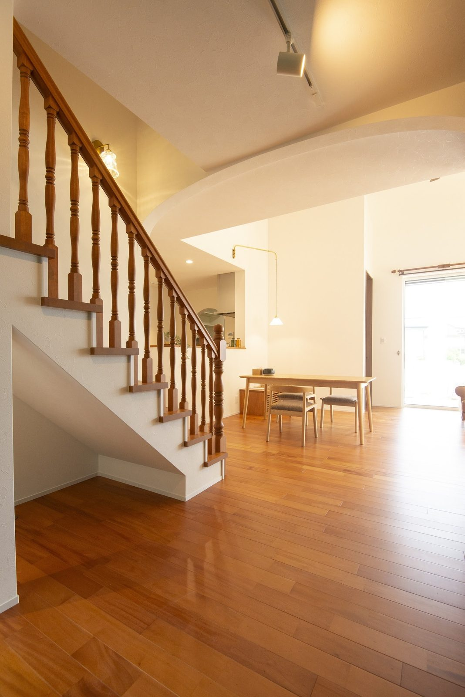
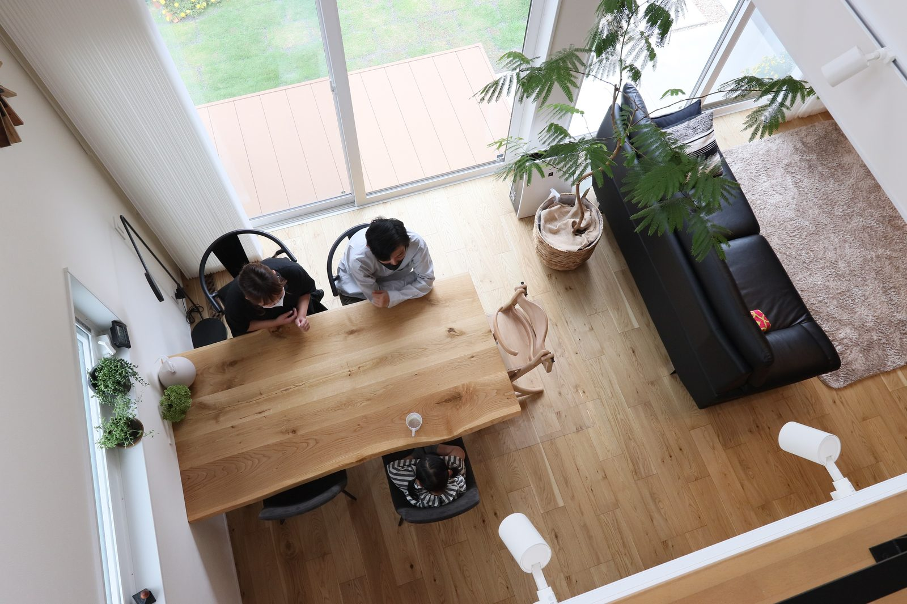

家族の時間割から考える
奈良で二階建てを計画するとき、居間を通って階段へ行く間取りを考える方もいると思います。家族と顔を合わせやすい一方、暮らし方によって気になる点も変わります。通勤や通学の時間、寝る時間が違う家族がいるなら、その一日を図面に重ねてみましょう。
階段へ行く道が居間と重なる
写真では、居間と食卓の横に階段があります。上り下りするとき、家族が過ごす場所の近くを通る配置です。帰宅後にそのまま二階へ行きたい人と、一度座って話したい人。どちらの希望も、間取りを決める前に聞いておきたいですね。

つながる空間は音も想像する
こちらの写真では、吹き抜け越しに食卓と居間が見えます。開放感は写真で伝わりますが、テレビや会話が二階でどう聞こえるかまでは分かりません。夜に勉強や仕事をする予定があるなら、寝室や作業場所との位置関係も相談しましょう。

室温は階段だけで決まらない
階段が居間にあるから必ず寒い、扉を付ければ必ず快適、と一つの条件だけでは決められません。建物の断熱や気密、空調の計画、上下階の使い方を合わせて確認します。実例を見学できる場合も、その家と自分たちの計画条件が同じかを聞いてみてください。
来客中の通り方も描く
友人が食卓にいるとき、洗濯物を持って二階へ上がるとき、子どもが帰宅したとき。階段までの道が人の座る場所に重ならないかを図面でたどります。見せたくない物があるなら、別の場所に隠すだけでなく、持って歩く道にも目を向けましょう。
合うかどうかは家族で決める
大阪や京都への通勤を続けながら奈良に住む場合も、帰宅時刻は家族それぞれです。平日と休日の過ごし方を書き、居間を通る案と廊下から上がる案を比べてみましょう。広さや見た目だけでなく、自分たちが落ち着いて過ごせるかを大切にしたいですね。
よくある質問
リビング階段は必ず採用したほうがいい？
家族の生活時間や来客時の通り方で向き不向きが変わります。採用する案としない案で、寝室への道や居間の使い方を比べて判断しましょう。
関連記事：奈良で平屋を建てる